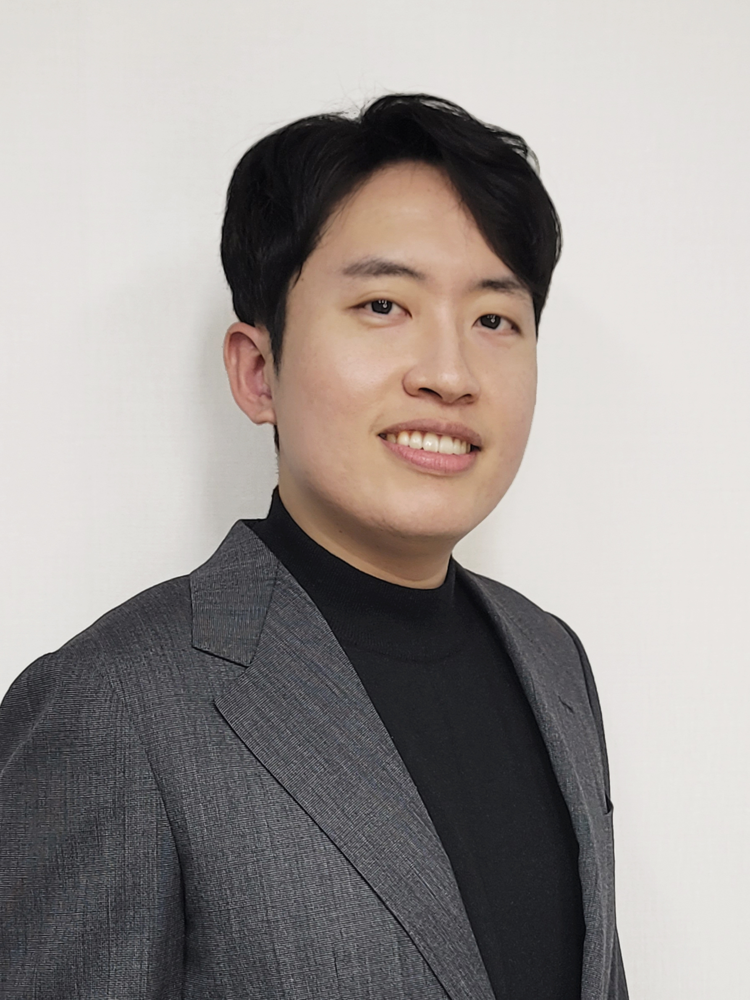

Susik Yoon

Department of Computer Science and Engineering, Korea University
Email: susik{@}korea.ac.kr
Office: Science Library 616C, Korea University
Office hours: by appointment
Short Bio
Susik Yoon is an assistant professor in the computer science department at Korea University, with prior experience as a postdoctoral researcher at the University of Illinois at Urbana-Champaign (UIUC) and an assistant research professor at the Korea Advanced Institute of Science and Technology (KAIST). He obtained his Ph.D., M.S., and B.S. at KAIST. He leads the Data & Adaptive Intelligence Systems (DAIS) lab at Korea University. The research interests of DAIS encompass a wide range of topics in data science and artificial intelligence, particularly focusing on continuous learning from unstructured, evolving data with human knowledge and AI foundation models to realize adaptive intelligence systems.
Experiences
- 2025.03 – Current | Adjunct professor, Artificial Intelligence, Korea University
- 2025.03 – Current | Adjunct professor, Data Science, Korea University
- 2024.03 – Current | Assistant professor, Computer Science and Engineering, Korea University
- 2021.09 – 2024.02 | Postdoctoral researcher, Computer Science, UIUC | Advisor: Prof. Jiawei Hana>
- 2021.03 – 2021.08 | Research assistant professor, Institute for Security Convergence Research, KAIST
- 2015.03 – 2021.02 | Graduate researcher, Data Mining Lab, KAIST | Advisor: Prof. Jae-Gil Leea>
- 2014.06 – 2014.08 | Intern, i2, Danish E-infrastructure Cooperation
- 2013.09 – 2013.12 | Intern, Infrastructure and Shared Services, General Electric
- 2010.06 – 2012.04 | Obligatory military service, Republic of Korea Army
Education
- 2017 – 2021 | PhD, KAIST | Data Science (knowledge service engineering)
- 2015 – 2017 | MS, KAIST | Data Science (knowledge service engineering)
- 2008 – 2015 | BS, KAIST | Industrial and Systems Engineering / Business and Technology Management (double major)
Services
Area Chair
- The ACM SIGKDD Conference on Knowledge Discovery and Data Mining (KDD): 2025–2026
- The Association for Computational Linguistics Rolling Review (ARR): 2026
Conference Reviewer
- The ACM SIGKDD Conference on Knowledge Discovery and Data Mining (KDD): 2021–2026
- The Association for Computational Linguistics (ARR/ACL/EMNLP): 2022–2026
- The AAAI Conference on Artificial Intelligence (AAAI): 2022–2024
- The ACM Web Conference (WWW): 2024
- The ACM International Conference on Research and Development in Information Retrieval (SIGIR): 2023 (sub), 2026
- International Conference on Learning Representations (ICLR): 2026
Journal Reviewer
- The VLDB Journal (VLDBJ)
- IEEE Transactions on Knowledge and Data Engineering (TKDE)
- ACM Transactions on Knowledge Discovery from Data (TKDD)
- Knowledge-based Systems (KBS)
- Data & Knowledge Engineering (DKE)
Awards
- Outstanding Lecture Award (Data Science), Korea University, 2025
- Seoktop Lecture Award (Data Science), Korea University, 2024
- Data Mining Research Excellence Award, UIUC, 2023
- Overseas Postdoc Fellowship, National Research Foundation of Korea, 2021–2024
- Best Paper, KAIST-Samsung Electronics Research Collaboration, 2020
- Best Presentation, KAIST Graduate School of Knowledge Service Engineering Colloquium, 2021, 2019
- Best Paper, Korea Computer Congress, 2017
- Above and Beyond, General Electric, 2013
- Einstein Fellowship, Korea Hydro and Nuclear Power, 2012
Talks
- Invited Seminar, Data Society Workshop, Korea Software Congress, December 2025
- Invited Seminar, LG Electronics, October 2025
- Invited Seminar, VAIV Company, August 2025
- Invited Seminar, Samsung Display, August 2025
- Invited Seminar, LG Electronics, June 2025
- Invited Seminar, Chung-Ang University, November 2024
- AI Tech Day, Korea University, October 2024
- Invited Seminar, Kongju National University, October 2024
- New Faculty Seminar, Korea Computer Congress, June 2024
- Invited Seminar, CHA Medical School, June 2024
- Special Seminar, Electronic & Information Research Information Center (EIRIC), September 2023
- CS/AI Seminar, Ulsan National Institute of Science and Technology (UNIST), March 2023
- AI Colloquium, Gwangju Institute of Science and Technology (GIST), March 2023
- Hyundai Vision Conference, Hyundai Motor Group, August 2022
- Postdoc Seminar, Department of Computer Science, University of Illinois at Urbana-Champaign (UIUC), February 2022
- Data Science Group, Institute for Basic Science (IBS), March 2021
- The Biannual KSE Student Colloquium, Korea Advanced Institute of Science & Technology (KAIST), January 2021
- Invited Paper Presentation, Korea Software Congress (KSC), December 2020
- TechTalk, NAVER, December 2020
- The Biannual KSE Student Colloquium, Korea Advanced Institute of Science & Technology (KAIST), December 2019
- Invited Paper Presentation, Korea Software Congress (KSC), December 2019